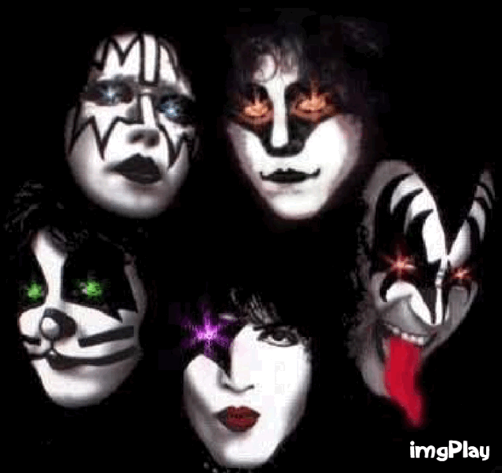
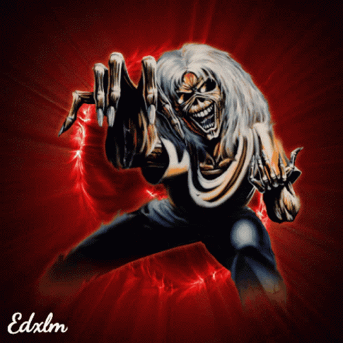

Wstęp
Zacznijmy od tego, że większość z Was zgodzi się ze mną zapewne, iż najlepsza muzyka powstała na przełomie lat 80/90. Najlepsi artyści, najlepsze teksty utworów i najwspanialsza muzyka. Dzieła, które tworzyli Ci wybitni wykonawcy po dziś dzień i jeszcze do końca świata, będą dotykały kolejnych pokoleń. To wszystko jest wspaniałe i niesamowite, jednak jest coś, co stanowi wielki minus tego faktu, a mianowicie to, że wielu z tych wybitnych ludzi już na tym świecie z nami nie ma i większość z nas nie będzie mogła zobaczyć ich "live".Niestety nie usłyszymy z ich strony także nowych utworów. Nikt nie żyje wiecznie, natomiast możemy cieszyć się dziedzictem muzycznym, które po sobie zostawiły takie osobistości jak np. Michael Jackson , Whitney Houston czy Freddie Mercury.
Moja lista
Jestem wielbicielką mocnego grania, choć jak wymieniłam na wstępie - nie tylko. Jednak, aby skupić się na kilku konkretnych wykonawcah, pozostanę przy swoich ulubionych "mocnych klimatach".Poniżej przedstawiam Wam moją listę przebojów, wśród konkretnych wykonawców:
| Zespół | Hit | Rok premiery |
|---|---|---|
| Iron Maiden | "Fear of the Dark" | 1992 |
| Kiss | "Dreamin" | 1998 |
| Judas Priest | "Painkiller" | 1990 |
| Skid Row | "18 and life" | 1989 |
| Scorpions | "Wind of change" | 1990 |
| Helloween | "I want out" | 1988 |
Podsumowanie
Wymieniłam jedynie mały odsetek wykonawców i ich hitów spośród tuzina lubianych i znanych. Jeśli macie ochotę na więcej zapraszam do kontaktu mailowego. Możecie też posłuchać wymienionych przeze mnie hitów klikając w konkretny tytuł myszką ( przeniesiecie się na youtube).